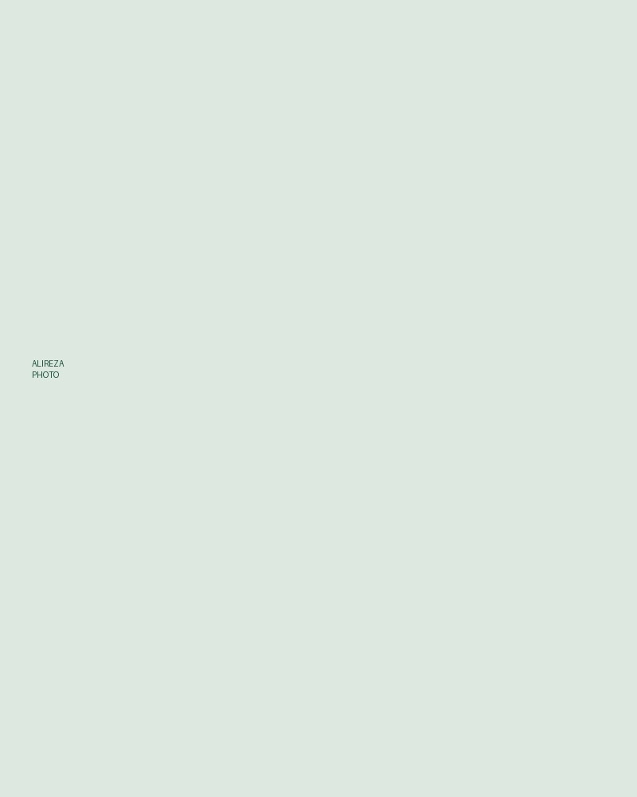

طراحی وب با نگاه متفاوت
سلام، من علیرضا جورکش هستم.
طراح UI/UX و توسعهدهنده وب؛ ایدهها را به تجربههای دیجیتال سریع، زیبا و کاربردی تبدیل میکنم.
13+فناوری و مهارت
UI/UXطراحی تجربه کاربر
Webتوسعه فرانت و بکاند

Creative DeveloperDesign + Code
BuildingDigital Experiences
01 / درباره من
طراحی که به جزئیات اهمیت میدهد.
من علیرضا جورکش هستم؛ در مسیر طراحی رابط کاربری و توسعه نرمافزار، تمرکزم روی ساخت محصولاتی است که هم از نظر ظاهری حرفهای باشند و هم استفاده از آنها برای کاربر ساده و لذتبخش باشد.
از ایده اولیه و ساختار تجربه کاربر تا پیادهسازی رابط و توسعه سمت سرور، تلاش میکنم هر بخش با منطق، عملکرد و زیبایی در کنار هم شکل بگیرد.
02 / مهارتها
ابزارهایی که با آنها میسازم.
ترکیبی از طراحی، توسعه فرانتاند، بکاند و برنامهنویسی.
01
HTMLSemantic Web
↗02
CSSResponsive UI
↗03
JavaScriptInteractive Web
↗04
UI / UX DesignUser Experience
↗05
TypeScriptTyped Development
↗06
Node.jsBackend Development
↗07
Express.jsREST APIs
↗08
React.jsModern Interfaces
↗09
Next.jsFull-stack React
↗10
PythonProgramming
↗11
C++Programming
↗12
JavaSoftware Development
↗13
Nest.jsScalable Backend
↗03 / همکاری
یک ایده دارید؟
بیایید آن را بسازیم.
اگر به دنبال یک طراح و توسعهدهنده برای ساخت یک تجربه دیجیتال حرفهای هستید، میتوانیم از ایده شروع کنیم.
شروع یک گفتگو ↗